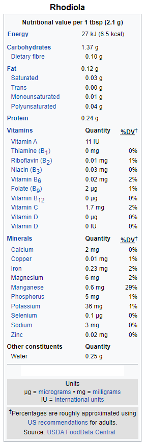

Wiki-Plant
Rhodiola
Adaptogen
Rhodiola
 Additional InfoCommon name: Rhodiola.
Scientific plant name: Rhodiola rosea L.
Origin: Rhodiola is from Northern Siberia area, and originated in Russia.
*Note: Other species of Rhodiola are grown in Canada, Alaska, and Northern China. These species do NOT provide correct extractions, this causes adulteration in the market. It is a high demanded extract, substitutions do NOT give you the same health benefits.
Harvest season: This plant is only harvested during the blooming period, once a year in the summer, August. To be harvested, the root has to be 8-9 cm in length and 2-3 cm in width. To be manually collected, it takes about 2-3 weeks. plant.
Production: The differences in folk application habits of Rhodiola might mostly depend on their geographical distributions.The Rhodiola species grow in high‐altitude and other cold areas of the northern hemisphere, including Tibet, AltaiMountains, Far East area, Scandinavia countries, Iceland, the British Isles, and Alaska.
Source:
https://www.researchgate.net/publication/330444780_Rhodiola_species_
A_comprehensive_review_of_traditional_use_phytochemistry_pharmacology_toxicity_
and_clinical_study
Health benefits: Rhodiola roots contain phenols, rosavin, rosin, rosarin, organic acids, terpenoids, phenolic acids and their derivatives, flavonoids, anthraquinones, alkaloids, tyrosol, and salidroside. Those components claim to work well as adaptogen and stress reliever. Traditional use support that it helps to alleviate fatigue, reduce depression and anxiety. Recent studies suggest that Rhodiola Rosae promotes brain health as a neuroprotector.
History of plant usage and discovery: Its use was first recorded by the Greek physician Dioscorides in 77 CE in De Materia Medica. Also known as ginseng of the North, it is a strong herb which has been used for over a thousand years. Roseroot (Rhodiola Rosea) was an indispensable source of power to vikings who conquered the seas.